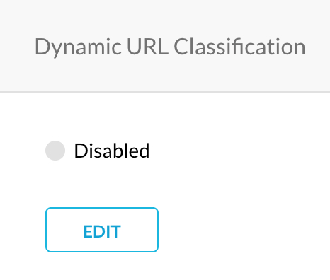
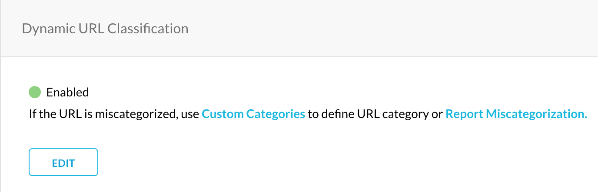
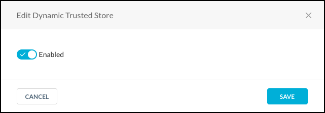
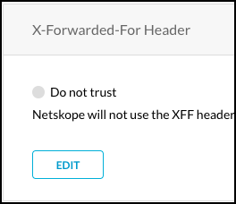

Web Configuration
Netskope Secure Web Gateway provides these configuration options.
 |
Dynamic Classification
Dynamic classification looks at the textual contents of a page and dynamically determines the category for the uncategorized URLs. This feature is turned off by default.
After a page has been dynamically categorized, the classification applies to all of your tenant instances. The page classification to a category expires every 12 hours so that if any changes occur to the page, the content is re-evaluated so the chosen category matches the current page content.
To use dynamic page classification:
Click Settings > Security Cloud Platform > Configuration and go to the Dynamic Classification section.
 Click Edit to turn this feature on or off. To use this feature, change the toggle to Enable and then click Save.
Uncategorized URLs that are encountered during a users web browsing session will be dynamically classified into predefined categories.
 Click Policies > Profile > Web > URL Lookup to search for predefined and Custom Categories, plus report miscategorization.

If the URL is miscategorized, use Custom Categories to define a custom URL category or Report Miscategorization.
Safe Search
To block porn and other explicit content in image format that violates your corporate policy, use the Safe Search feature.
To use safe search:
Click Settings > Security Cloud Platform > Configuration and go to the Safe Search section.

Click Edit to turn this feature on or off. To use this feature, change the toggle to Enable and then click Save.

Inappropriate URLs that are encountered during a users web browsing session will be blocked.
Dynamic Trusted Store
To use trusted store certificates:
Click Settings > Security Cloud Platform > Configuration and go to the Dynamic Trusted Store section.

Click Edit to turn this feature on or off. To use this feature, change the toggle to Enable and then click Save.
 Inappropriate URLs that are encountered during a users web browsing session will be blocked.
X-Forwarded-For Header
An X-Forwarded-For header is used to identify the originating IP address of a user connecting to a web server through an HTTP proxy. Without the X-Forwarded-For header, the proxy server will be identified as the originating IP address. Use this feature to trust IP addresses contained in the X-Forwarded-For header.
Note
For security, this feature is not supported for remote users when using explicit proxy steering methods.
To use X-Forwarded-For Header:
Click Settings > Security Cloud Platform > Configuration and go to the X-Forwarded-For Header section.
 Click Edit to turn this feature on or off. To use this feature, change the toggle to Trust and then click Save.